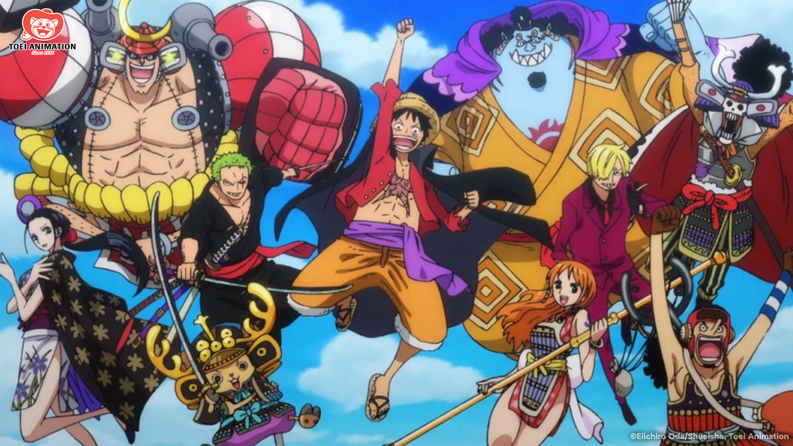

One Piece recalcula rota e corrige o maior incômodo dos fãs em quase 30 anos
Publicado em: 09 de Maio de 2026

Anime mostra que nunca é tarde demais para evoluir seu formato e ritmo
Pela primeira vez em quase três décadas, o anime de One Piece adotou o formato sazonal, com lançamentos concentrados em apenas alguns meses do ano, abandonando o modelo de episódios contínuos. Mesmo com pausas pontuais e fillers, a série seguiu ininterrupta por muito tempo, fazendo a qualidade da animação acompanhar a própria história da animação japonesa contemporânea. Porém, nem tudo foram flores na jornada de Monkey D. Luffy: a produção foi duramente criticada pelo tom arrastado de sua narrativa durante muito tempo. Agora, as coisas parecem ter tomado um novo caminho.

Em abril, o anime retornou com a estreia do arco de Elbaf, com os piratas do Chapéu de Palha acordando presos no reino dos blocos e os Yonkous dando seus primeiros passos em direção ao grande tesouro. Em pouco tempo de tela, já presenciamos o aguardado encontro entre Luffy e Loki, o Príncipe dos Gigantes. Os destaques desta nova leva de episódios ficaram, sem dúvidas, com a animação exuberante e o fim da histórica enrolação do anime.
Desta vez, o anime deixou de lado as reações de câmera infinitas e os flashbacks desnecessários para focar em episódios redondos, com começo, meio e fim. Ou seja, cada semana proporciona um ar de urgência e novidade para os fãs da obra. Pelo menos, é o que está rolando por enquanto. Com mais tempo para trabalhar graças ao intervalo de meses entre cada temporada, os animadores podem se dedicar mais a cada cena, resultando em sequências deslumbrantes e coreografias dinâmicas.
Ano após ano, One Piece segue provando que ainda tem muito a oferecer para os seus fãs cativos, para as novas audiências — e até para os futuros espectadores do remake The One Piece. Sem medo de se reinventar na reta final de sua história, a obra de Eiichiro Oda segue, a plenos pulmões, fiel aos seus princípios, mas sempre aberta a melhorias necessárias. O que leva à grande pergunta: se a qualidade continuar subindo assim, o que nos espera na ilha final?
Tudo sobre One Piece
Na história escrita por Eiichiro Oda, houve um homem que conquistou tudo aquilo que o mundo tinha a oferecer, o lendário Rei dos Piratas, Gold Roger. Esse tesouro recebeu o nome de One Piece e a busca por ele deu início a grande era dos piratas. Cerca de 20 anos depois, um garoto com poderes de borracha iniciou sua aventura, reunindo sua tripulação e chacoalhando o mundo. Seu nome é Monkey D. Luffy.
Algumas sagas são mais impactantes para a obra que outras, mas todas têm a sua beleza e um pedacinho do autor. A cada nova ilha, os personagens se aventuram por um mundo completamente diferente do anterior e essa dinâmica deixa a história criativa e cativante.
Todas as temporadas e seus mais de 1100 episódios, especiais e filmes de One Piece estão disponíveis na Crunchyroll. Algumas temporadas dubladas e uma série live-action podem ser encontradas na Netflix. No Brasil, o mangá é publicado pela editora Panini.